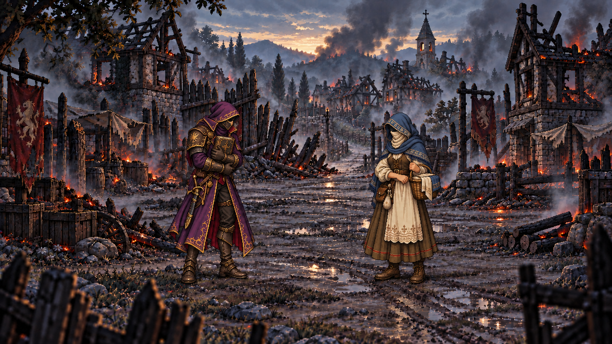

RPGThreeJS · Candidat hors jeu
Bois-Clair sacrifié · pilote v2


01 / 05
Chargement des cinq illustrations…
Réduction des mouvements active. Images fixes, lecture uniquement sur demande ; navigation avec les flèches disponible.
RPGThreeJS · Candidat hors jeu

Chargement des cinq illustrations…
Réduction des mouvements active. Images fixes, lecture uniquement sur demande ; navigation avec les flèches disponible.